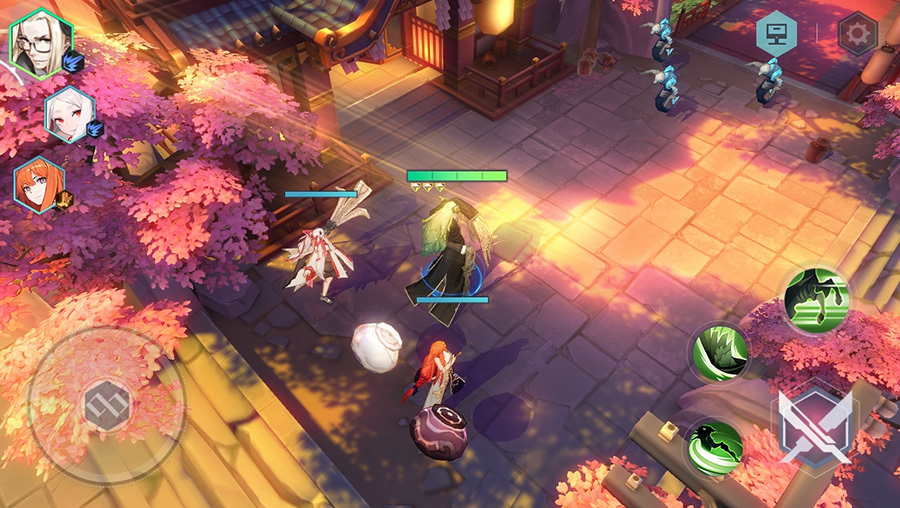
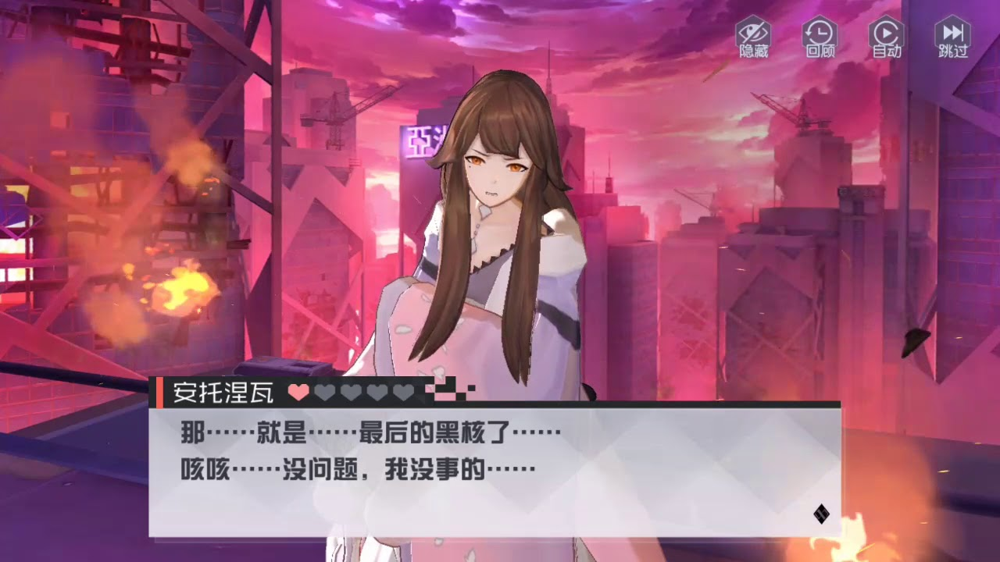
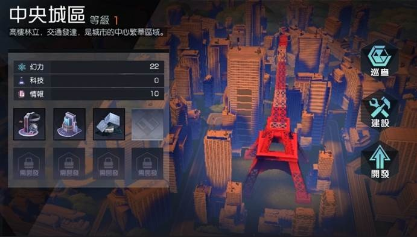

遊戲簡介:
永遠的7日之都是由中國遊戲開發商網易遊戲所開發的一款角色扮演類網路遊戲，該網路遊戲支援iOS、Android等手機平台。該遊戲由網易遊戲負責中國大陸地區，港澳台、日韓等境外市場則由不同業者發行。音樂由陳達飛和川井憲次聯合製作。
遊戲背景:
這裡是「交界都市」，兩個時空的交介面。在這座城市中，「黑門」不斷開啟，異世界的怪物從裡面湧出。如果這座城市淪陷，整個世界就會毀滅。被稱作「神器使」的人們，通過自身的特殊力量——「幻力」與怪物交戰。然而力量總是雙向的，「幻力」在某種情況下，也會成為毀滅神器使的毒藥。 你，被選為「指揮使」的人，擁有增幅神器使力量的能力，所有人都把你當做這個城市的救星，然而你總會覺得一些場景似曾相識，卻又失去了大部分的記憶。而在你成為指揮使的第7天，毀滅的大門終會打開，你只會帶著些許記憶殘片，踏入下一個輪迴……
遊戲內容:
玩家操控的角色為「指揮使」，並操控「神器使」去度過這七日的倒數。遊戲中除了度過主線劇情還有許多關卡給於玩家挑戰，如黑門挑戰 記憶殿堂 時空亂流...許多地方可以獲得遊戲資源並提升神氣使的能力。
遊戲畫面:
  遊戲影片:
遊戲主線攻略:
這裡只到台服所開放的地方遊戲角色支線攻略:
台服的角色遊戲op:
後續一些想說的話:
永7是第一個讓我印象深刻的手遊，它的故事內容是我看過有使以來最為精采的，往往其他遊戲的主線劇情會因無聊而跳過，但它是第一個讓我想仔細看完，它就像是一本豐富的小說，而且主線環環相扣，還有彩蛋及猜疑的地方，過去時常跟朋友們討論故事內容。如今台服關了，只能去玩原廠了，有點可惜。
最新op: